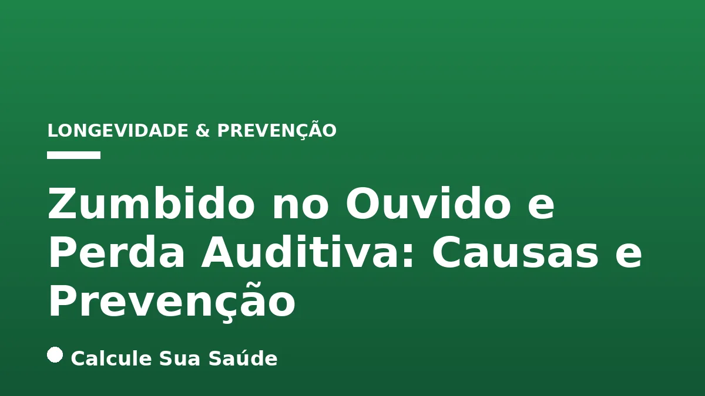

Aviso médico importante
Este conteúdo é educativo e informativo e não substitui a consulta, o diagnóstico ou o tratamento de um profissional de saúde. Em caso de sintomas, procure orientação médica.
Índice do Artigo
- 1. O Que é Zumbido no Ouvido (Tinnitus)?
- 2. O Que é Perda Auditiva (Hipoacusia)?
- 3. A Relação Intrínseca entre Zumbido e Perda Auditiva
- 4. Principais Causas do Zumbido no Ouvido
- 5. Principais Causas da Perda Auditiva
- 6. Fatores de Risco Comuns para Zumbido e Perda Auditiva
- 7. Diagnóstico: Como Avaliar Zumbido e Perda Auditiva
- 8. Estratégias de Prevenção da Perda Auditiva
- 9. Estratégias de Prevenção do Zumbido no Ouvido
- 10. Manejo e Tratamento do Zumbido no Ouvido
- 11. Manejo e Tratamento da Perda Auditiva
- 12. O Impacto Psicossocial do Zumbido e da Perda Auditiva
- 13. A Importância da Abordagem Multidisciplinar
- 14. Mitos e Verdades sobre Zumbido e Perda Auditiva
- 15. Conclusão: Cuidando da Sua Saúde Auditiva
- 16. Perguntas frequentes
O zumbido no ouvido, cientificamente conhecido como tinnitus, e a perda auditiva (hipoacusia) são condições de saúde prevalentes que afetam uma parcela significativa da população global. Embora possam ocorrer isoladamente, frequentemente estão interligados, com a perda auditiva sendo um dos principais fatores de risco para o desenvolvimento ou agravamento do zumbido. Compreender as causas subjacentes, os mecanismos fisiopatológicos e as estratégias de prevenção e manejo é crucial para preservar a saúde auditiva e melhorar a qualidade de vida.
Este artigo, elaborado com base em evidências científicas consolidadas, visa fornecer uma visão aprofundada sobre o zumbido e a perda auditiva. Abordaremos desde suas definições e tipos até os fatores de risco, métodos diagnósticos e as opções de tratamento e prevenção disponíveis. Nosso objetivo é capacitar você com informações precisas para que possa tomar decisões informadas sobre sua saúde auditiva e buscar a assistência médica adequada quando necessário.
É fundamental ressaltar que as informações aqui apresentadas têm caráter educativo e não substituem a consulta, o diagnóstico ou o tratamento médico profissional. Em caso de sintomas ou preocupações com sua audição, procure sempre um médico otorrinolaringologista ou um fonoaudiólogo qualificado.
Em resumo
- Zumbido e perda auditiva são frequentemente interligados, com a perda auditiva sendo um fator de risco comum para o zumbido.
- As causas são multifatoriais, incluindo exposição a ruído, idade, medicamentos ototóxicos e condições de saúde sistêmicas.
- A prevenção é crucial e envolve proteção auditiva, controle de ruído e manejo de doenças crônicas.
- O diagnóstico precoce, através de exames como a audiometria, é essencial para um manejo eficaz.
- Não há cura universal para o zumbido, mas diversas terapias e estratégias de manejo podem aliviar os sintomas.
- Aparelhos auditivos e implantes cocleares são opções eficazes para a reabilitação da perda auditiva.
1. O Que é Zumbido no Ouvido (Tinnitus)?
O zumbido no ouvido, ou tinnitus, é a percepção de um som que não tem uma fonte externa. Pode ser descrito de diversas formas, como um chiado, apito, clique, rugido, pulsação ou assobio. A intensidade e a frequência variam amplamente entre os indivíduos e podem ser percebidas em um ou ambos os ouvidos, ou mesmo na cabeça. Estima-se que uma parcela considerável da população experimente zumbido em algum momento da vida, e para muitos, ele se torna uma condição crônica e debilitante.
Existem dois tipos principais de zumbido:
Zumbido Subjetivo
É o tipo mais comum, percebido apenas pela pessoa afetada. Geralmente está associado a problemas no sistema auditivo, desde o ouvido externo até o cérebro. A maioria dos casos de zumbido subjetivo está relacionada à perda auditiva, mesmo que a pessoa não a perceba.
Zumbido Objetivo
É um tipo raro de zumbido que pode ser ouvido por outras pessoas, como o médico, durante um exame. Geralmente é causado por problemas físicos ou mecânicos, como vasos sanguíneos anormais, espasmos musculares no ouvido médio ou disfunção da articulação temporomandibular (ATM). O zumbido pulsátil, que acompanha o ritmo dos batimentos cardíacos, é um exemplo comum de zumbido objetivo, muitas vezes ligado a questões vasculares.
2. O Que é Perda Auditiva (Hipoacusia)?
A perda auditiva, ou hipoacusia, refere-se à diminuição da capacidade de ouvir sons. Pode variar de leve a profunda e afetar um ou ambos os ouvidos. A perda auditiva não é apenas uma questão de volume, mas também de clareza, dificultando a compreensão da fala, especialmente em ambientes ruidosos. É uma condição que pode ter um impacto significativo na comunicação, na interação social e na qualidade de vida geral do indivíduo.
A perda auditiva é classificada em diferentes tipos, dependendo da parte do sistema auditivo que é afetada:
Perda Auditiva Condutiva
Ocorre quando há um problema na transmissão do som através do ouvido externo ou médio. Isso pode ser causado por acúmulo de cera, infecções no ouvido médio (otite), perfuração do tímpano, otosclerose (endurecimento dos ossículos do ouvido médio) ou malformações congênitas. Muitas vezes, a perda auditiva condutiva é reversível com tratamento médico ou cirúrgico.
Perda Auditiva Neurossensorial
Resulta de danos no ouvido interno (cóclea) ou no nervo auditivo. É o tipo mais comum de perda auditiva permanente e frequentemente está associada ao envelhecimento (presbiacusia) e à exposição a ruídos altos. Outras causas incluem infecções virais, doenças autoimunes, traumatismos cranianos e uso de medicamentos ototóxicos. Raramente é reversível, mas pode ser gerenciada com aparelhos auditivos ou implantes cocleares.
Perda Auditiva Mista
É uma combinação de perda auditiva condutiva e neurossensorial, o que significa que há problemas tanto no ouvido externo/médio quanto no ouvido interno/nervo auditivo.
3. A Relação Intrínseca entre Zumbido e Perda Auditiva
A conexão entre zumbido e perda auditiva é profunda e complexa. Em muitos casos, o zumbido é um sintoma ou uma consequência da perda auditiva. Quando as células ciliadas do ouvido interno são danificadas (o que ocorre na perda auditiva neurossensorial), elas deixam de enviar sinais sonoros adequados ao cérebro. O cérebro, em uma tentativa de compensar a falta de entrada sonora, pode gerar sua própria atividade neural, que é percebida como zumbido.
Essa teoria sugere que o zumbido é, em essência, uma forma de "fantasma auditivo", análoga à dor do membro fantasma em amputados. A perda de estimulação auditiva normal leva a uma reorganização neural no córtex auditivo, resultando na percepção do zumbido. Isso explica por que muitas pessoas com zumbido também apresentam algum grau de perda auditiva, mesmo que sutil e não percebida no dia a dia.
Além disso, a presença de zumbido pode exacerbar a percepção da perda auditiva, pois o som constante pode mascarar sons externos, tornando ainda mais difícil a compreensão da fala e a interação com o ambiente. Por outro lado, o tratamento da perda auditiva, como o uso de aparelhos auditivos, muitas vezes ajuda a aliviar o zumbido, pois a amplificação dos sons externos pode "mascarar" o zumbido e reestimular as vias auditivas.
4. Principais Causas do Zumbido no Ouvido
As causas do zumbido são diversas e nem sempre fáceis de identificar. Em muitos casos, ele é um sintoma de uma condição subjacente, e não uma doença em si. As causas mais comuns incluem:
Exposição a Ruídos Altos
A exposição prolongada ou aguda a ruídos intensos é uma das principais causas de zumbido e perda auditiva. Isso pode ocorrer em ambientes de trabalho (fábricas, construção), lazer (shows, fones de ouvido em volume alto) ou eventos traumáticos (explosões). O dano às células ciliadas do ouvido interno pode ser irreversível.
Perda Auditiva Relacionada à Idade (Presbiacusia)
À medida que envelhecemos, é natural que ocorra uma degeneração gradual das células ciliadas e outras estruturas do ouvido interno. A presbiacusia é a causa mais comum de perda auditiva em idosos e frequentemente vem acompanhada de zumbido.
Otosclerose
É uma doença hereditária na qual ocorre um crescimento ósseo anormal no ouvido médio, impedindo a vibração adequada dos ossículos e a transmissão do som. Pode causar perda auditiva condutiva e zumbido.
Doença de Ménière
Caracterizada por episódios de vertigem, perda auditiva flutuante, plenitude auricular e zumbido. É causada por um acúmulo excessivo de líquido no ouvido interno.
Medicamentos Ototóxicos
Certos medicamentos podem ser tóxicos para o ouvido interno, causando zumbido e/ou perda auditiva. Exemplos incluem alguns antibióticos (aminoglicosídeos), diuréticos de alça, aspirina em altas doses e certos quimioterápicos. É crucial discutir com seu médico os riscos e benefícios de qualquer medicação.
Problemas Vasculares
Condições que afetam o fluxo sanguíneo perto do ouvido, como aterosclerose, hipertensão arterial ou malformações vasculares, podem causar zumbido pulsátil. O acúmulo de placas nas artérias pode alterar o fluxo sanguíneo, tornando-o audível.
Disfunção da Articulação Temporomandibular (ATM)
Problemas na articulação que conecta a mandíbula ao crânio podem causar dor, estalos e, em alguns casos, zumbido, devido à proximidade anatômica com o sistema auditivo.
Outras Causas
Tumores do nervo auditivo (neuroma do acústico), acúmulo de cera, infecções no ouvido, estresse, ansiedade, depressão e até mesmo certos hábitos alimentares (cafeína, álcool) podem influenciar a percepção do zumbido.
5. Principais Causas da Perda Auditiva
A perda auditiva pode ter diversas origens, afetando pessoas de todas as idades. A identificação da causa é fundamental para determinar o tratamento mais adequado. As causas mais frequentes incluem:
Exposição a Ruído
Como mencionado, a exposição a ruídos excessivos é uma das principais causas de perda auditiva neurossensorial. Danos às células ciliadas da cóclea são cumulativos e irreversíveis. Ambientes de trabalho barulhentos, uso recreativo de armas de fogo sem proteção e fones de ouvido em volume alto são exemplos comuns de riscos.
Envelhecimento (Presbiacusia)
A perda auditiva relacionada à idade é um processo natural e gradual que afeta a maioria das pessoas à medida que envelhecem. Geralmente, a perda começa com as frequências mais altas e progride para as mais baixas, dificultando a compreensão da fala, especialmente em ambientes com ruído de fundo.
Infecções
Infecções do ouvido, como otite média aguda ou crônica, podem causar perda auditiva condutiva temporária ou permanente. Infecções virais, como caxumba, sarampo ou meningite, podem danificar o ouvido interno, resultando em perda auditiva neurossensorial.
Ototoxicidade por Medicamentos
Alguns medicamentos, como certos antibióticos (aminoglicosídeos), quimioterápicos (cisplatina), diuréticos de alça e altas doses de aspirina, podem ser ototóxicos e causar danos permanentes ou temporários ao ouvido interno, resultando em perda auditiva e/ou zumbido.
Trauma Físico
Traumatismos cranianos, perfurações do tímpano (por objetos ou barotrauma) ou fraturas do osso temporal podem levar à perda auditiva.
Genética
A predisposição genética desempenha um papel significativo em muitos casos de perda auditiva, tanto congênita (presente ao nascimento) quanto de início tardio, como a otosclerose ou certas formas de presbiacusia.
Doenças Crônicas
Condições sistêmicas como diabetes, hipertensão arterial, doenças cardiovasculares e doenças autoimunes podem afetar o suprimento sanguíneo para o ouvido interno ou causar danos diretos às estruturas auditivas, contribuindo para a perda auditiva.
6. Fatores de Risco Comuns para Zumbido e Perda Auditiva
Diversos fatores podem aumentar o risco de desenvolver zumbido e/ou perda auditiva. Muitos deles são sobrepostos, reforçando a interconexão entre as duas condições. Reconhecer e, quando possível, modificar esses fatores é uma parte essencial da prevenção.
Tabela: Fatores de Risco para Zumbido e Perda Auditiva
| Fator de Risco | Impacto no Zumbido | Impacto na Perda Auditiva |
|---|---|---|
| Exposição a Ruído Alto | Dano às células ciliadas, gerando zumbido. | Dano permanente às células ciliadas, perda neurossensorial. |
| Idade Avançada | Degeneração natural do sistema auditivo. | Presbiacusia (perda auditiva relacionada à idade). |
| Doenças Cardiovasculares | Problemas de fluxo sanguíneo (zumbido pulsátil). | Redução do suprimento sanguíneo ao ouvido interno. |
| Diabetes | Dano aos nervos e vasos sanguíneos. | Neuropatia auditiva, microangiopatia. |
| Hipertensão Arterial | Alterações vasculares, zumbido pulsátil. | Dano aos vasos do ouvido interno. |
| Tabagismo | Vasoconstrição, redução do fluxo sanguíneo. | Dano às células ciliadas, piora da circulação. |
| Consumo Excessivo de Álcool | Pode piorar a percepção do zumbido. | Potencialmente ototóxico em uso crônico. |
| Estresse e Ansiedade | Intensifica a percepção e o incômodo do zumbido. | Não causa diretamente, mas pode agravar sintomas. |
| Uso de Medicamentos Ototóxicos | Dano direto às células ciliadas. | Perda auditiva induzida por medicamentos. |
| Acúmulo de Cera | Obstrução do canal auditivo, pode causar zumbido. | Perda auditiva condutiva temporária. |
É importante notar que a presença de um ou mais desses fatores não garante o desenvolvimento das condições, mas aumenta a probabilidade. A modificação de hábitos de vida e o manejo de doenças crônicas podem reduzir significativamente esses riscos.
7. Diagnóstico: Como Avaliar Zumbido e Perda Auditiva
O diagnóstico preciso do zumbido e da perda auditiva é fundamental para determinar a causa subjacente e planejar o tratamento mais eficaz. O processo geralmente envolve uma avaliação completa por um otorrinolaringologista e um fonoaudiólogo.
Anamnese Detalhada
O médico fará uma série de perguntas sobre o histórico de saúde do paciente, a natureza do zumbido (tipo, intensidade, frequência, duração, fatores de melhora ou piora), a presença de perda auditiva, exposição a ruídos, uso de medicamentos, histórico familiar e outras condições médicas. Informações sobre o impacto do zumbido na qualidade de vida (sono, concentração, humor) também são importantes.
Exame Físico
Inclui a otoscopia, que é a visualização do canal auditivo e do tímpano para verificar a presença de cera, infecções, perfurações ou outras anormalidades estruturais.
Audiometria Tonal e Vocal
Este é o exame padrão ouro para avaliar a audição. A audiometria tonal mede a capacidade do paciente de ouvir sons em diferentes frequências e intensidades, determinando o grau e o tipo de perda auditiva. A audiometria vocal avalia a capacidade de compreender a fala.
Imitanciometria (Timpanometria)
Mede a mobilidade do tímpano e a função dos ossículos do ouvido médio, auxiliando no diagnóstico de problemas condutivos, como otite média ou otosclerose.
Acufenometria
É um teste específico para o zumbido, que tenta caracterizar o som percebido pelo paciente em termos de frequência e intensidade, comparando-o com sons externos. Embora não seja um diagnóstico da causa, ajuda no planejamento da terapia sonora.
Exames de Imagem
Em casos específicos, quando há suspeita de causas mais sérias (tumores, problemas vasculares), exames como ressonância magnética (RM) ou tomografia computadorizada (TC) podem ser solicitados para investigar o cérebro, o nervo auditivo e as estruturas do ouvido interno. Por exemplo, um zumbido unilateral persistente ou associado a outros sintomas neurológicos pode justificar uma investigação mais aprofundada.
8. Estratégias de Prevenção da Perda Auditiva
A prevenção é a melhor abordagem para a perda auditiva, especialmente a induzida por ruído, que é em grande parte evitável. Adotar hábitos saudáveis e medidas protetoras pode preservar sua audição por muitos anos.
Proteção Auditiva
- Protetores Auriculares: Use protetores de ouvido (plugues ou abafadores) em ambientes ruidosos, como shows, eventos esportivos, locais de trabalho com máquinas barulhentas ou ao usar ferramentas elétricas.
- Fones de Ouvido: Mantenha o volume dos fones de ouvido em níveis seguros (geralmente abaixo de 60% do volume máximo) e limite o tempo de uso. A regra 60/60 (60% do volume por no máximo 60 minutos) é uma boa diretriz.
Controle de Ruído Ambiental
Minimize a exposição a ruídos altos em casa e no trabalho. Se você trabalha em um ambiente barulhento, certifique-se de que as regulamentações de segurança auditiva sejam seguidas e use os equipamentos de proteção individual fornecidos.
Exames Auditivos Regulares
Realize exames de audição periódicos, especialmente se você tem fatores de risco (idade avançada, exposição a ruído, histórico familiar). O diagnóstico precoce de uma perda auditiva pode permitir intervenções que retardam sua progressão ou minimizam seu impacto.
Manejo de Doenças Crônicas
Controle condições como hipertensão e diabetes, pois elas podem afetar a saúde vascular e neural do ouvido interno. Um bom controle dessas doenças pode ajudar a proteger sua audição.
Evitar Medicamentos Ototóxicos Desnecessários
Sempre discuta com seu médico sobre os potenciais efeitos colaterais auditivos de qualquer medicamento. Não se automedique e siga rigorosamente as prescrições médicas.
Higiene Auricular Adequada
Evite inserir objetos (cotonetes, grampos) no canal auditivo, pois isso pode empurrar a cera mais para dentro, causar lesões ou perfurar o tímpano. A cera geralmente se auto-limpa; se houver acúmulo excessivo, procure um médico para remoção segura.
9. Estratégias de Prevenção do Zumbido no Ouvido
Muitas das estratégias de prevenção do zumbido se sobrepõem às da perda auditiva, dada a forte correlação entre as duas condições. No entanto, existem abordagens adicionais focadas especificamente na redução do risco de desenvolver ou agravar o zumbido.
Proteção Auditiva e Controle de Ruído
Assim como na prevenção da perda auditiva, evitar a exposição a ruídos altos é a medida preventiva mais eficaz contra o zumbido induzido por ruído. Use protetores auriculares em ambientes barulhentos e modere o volume de fones de ouvido.
Manejo do Estresse e da Ansiedade
O estresse e a ansiedade não causam zumbido diretamente, mas podem intensificar sua percepção e o incômodo associado. Técnicas de relaxamento, meditação, yoga, exercícios físicos regulares e uma boa higiene do sono podem ajudar a gerenciar esses fatores. Em casos de ansiedade ou depressão clinicamente significativas, buscar apoio profissional é fundamental.
Dieta Equilibrada e Hidratação
Embora não haja uma dieta específica para prevenir o zumbido, uma alimentação saudável e equilibrada, rica em nutrientes e antioxidantes, pode contribuir para a saúde geral e vascular, o que indiretamente beneficia o sistema auditivo. Evitar o consumo excessivo de cafeína, álcool e sódio pode ser útil para algumas pessoas, pois esses podem ser gatilhos para o zumbido.
Evitar Ototóxicos
Esteja ciente dos medicamentos que podem causar zumbido como efeito colateral. Sempre informe seu médico sobre o zumbido existente antes de iniciar novas medicações.
Atividade Física Regular
A prática regular de exercícios físicos melhora a circulação sanguínea, reduz o estresse e promove o bem-estar geral, fatores que podem ter um efeito positivo na prevenção e no manejo do zumbido.
Monitoramento da Saúde Geral
Mantenha um acompanhamento médico regular para gerenciar condições como hipertensão, diabetes e problemas de tireoide, que podem estar associadas ao zumbido.
10. Manejo e Tratamento do Zumbido no Ouvido
Atualmente, não existe uma "cura" universal para o zumbido, mas há diversas estratégias de manejo que visam reduzir o incômodo e melhorar a qualidade de vida do paciente. O tratamento é individualizado e pode envolver uma combinação de abordagens.
Terapia Sonora (Sound Therapy)
Utiliza sons externos para mascarar ou dessensibilizar o paciente ao zumbido. Isso pode incluir geradores de som de mesa, aplicativos de smartphone com ruído branco, sons da natureza ou até mesmo aparelhos auditivos com geradores de som embutidos. O objetivo é tornar o zumbido menos perceptível ou menos irritante.
Terapia de Retreinamento do Zumbido (TRT)
É uma terapia abrangente que combina aconselhamento (para mudar a percepção do zumbido) com terapia sonora (para habituação). O objetivo é treinar o cérebro a ignorar o zumbido, reduzindo sua importância e o impacto emocional.
Terapia Cognitivo-Comportamental (TCC)
A TCC é uma abordagem psicológica que ajuda os pacientes a identificar e modificar pensamentos e comportamentos negativos associados ao zumbido. É eficaz na redução do estresse, ansiedade e depressão que frequentemente acompanham o zumbido crônico, melhorando a capacidade de lidar com a condição.
Aparelhos Auditivos
Para pacientes com zumbido e perda auditiva, os aparelhos auditivos podem ser muito eficazes. Ao amplificar os sons ambientais, eles podem mascarar o zumbido e reestimular as vias auditivas, reduzindo a percepção do som interno.
Medicamentos
Não há medicamentos aprovados especificamente para tratar o zumbido em si. No entanto, medicamentos podem ser prescritos para tratar sintomas associados, como ansiedade, depressão ou problemas de sono, que podem piorar a percepção do zumbido. Antidepressivos e ansiolíticos podem ser considerados em alguns casos, sob estrita supervisão médica.
Mudanças no Estilo de Vida
Evitar gatilhos conhecidos (cafeína, álcool, nicotina), gerenciar o estresse, praticar exercícios físicos e garantir uma boa qualidade de sono podem contribuir significativamente para o alívio dos sintomas. A apneia do sono, por exemplo, pode exacerbar o zumbido e seu tratamento pode trazer alívio.
11. Manejo e Tratamento da Perda Auditiva
O tratamento da perda auditiva depende do tipo, grau e causa. Para perdas condutivas, muitas vezes há opções médicas ou cirúrgicas. Para perdas neurossensoriais, a reabilitação auditiva é a principal abordagem.
Aparelhos Auditivos
São a solução mais comum para a perda auditiva neurossensorial. Eles amplificam os sons e os entregam ao ouvido, melhorando a capacidade de ouvir e compreender a fala. Existem diversos tipos e modelos, adaptados às necessidades individuais do paciente.
Implantes Cocleares
Para indivíduos com perda auditiva neurossensorial severa a profunda que não se beneficiam suficientemente dos aparelhos auditivos, o implante coclear pode ser uma opção. É um dispositivo eletrônico cirurgicamente implantado que bypassa as partes danificadas do ouvido interno e estimula diretamente o nervo auditivo, enviando sinais sonoros ao cérebro.
Cirurgias
Para perdas auditivas condutivas, a cirurgia pode ser curativa. Exemplos incluem: timpanoplastia (para reparar perfurações do tímpano), estapedectomia (para tratar otosclerose) e remoção de colesteatoma (um crescimento anormal de pele no ouvido médio). A remoção de cera ou o tratamento de infecções também são intervenções médicas importantes.
Dispositivos de Condução Óssea
Para alguns tipos de perda auditiva condutiva ou mista, ou para pessoas com atresia do canal auditivo, dispositivos que transmitem o som através da vibração óssea podem ser utilizados.
Reabilitação Auditiva
Além dos dispositivos, a reabilitação auditiva pode incluir treinamento auditivo, leitura labial e estratégias de comunicação para ajudar o paciente a se adaptar à sua perda auditiva e maximizar o uso de seus dispositivos.
12. O Impacto Psicossocial do Zumbido e da Perda Auditiva
Tanto o zumbido crônico quanto a perda auditiva podem ter um impacto significativo na saúde mental e no bem-estar social dos indivíduos. Essas condições não afetam apenas a audição, mas a qualidade de vida como um todo.
Ansiedade e Depressão
O zumbido constante e a dificuldade de comunicação impostas pela perda auditiva podem levar a sentimentos de frustração, isolamento, ansiedade e até depressão. A dificuldade em participar de conversas e atividades sociais pode levar ao retraimento e à diminuição da autoestima.
Dificuldades de Comunicação
A perda auditiva dificulta a compreensão da fala, exigindo um esforço cognitivo maior para processar as informações auditivas. Isso pode levar à fadiga auditiva e à exaustão, especialmente em ambientes ruidosos. O zumbido pode mascarar ainda mais os sons da fala, agravando o problema.
Problemas de Sono
O zumbido pode ser mais perceptível no silêncio da noite, dificultando o adormecer e mantendo o sono. A privação do sono, por sua vez, pode exacerbar a percepção do zumbido e o estresse geral.
Impacto na Vida Profissional e Social
Dificuldades de comunicação podem afetar o desempenho no trabalho e as relações interpessoais. O isolamento social pode se tornar um problema sério, levando à diminuição da participação em atividades de lazer e hobbies.
É crucial reconhecer esses impactos e buscar apoio. Grupos de apoio, terapia psicológica e a comunicação aberta com familiares e amigos podem ser de grande valia. O tratamento eficaz do zumbido e da perda auditiva não se limita apenas à reabilitação auditiva, mas também à gestão do bem-estar emocional e social.
13. A Importância da Abordagem Multidisciplinar
Devido à complexidade e ao impacto multifacetado do zumbido e da perda auditiva, uma abordagem multidisciplinar é frequentemente a mais eficaz. Diferentes profissionais de saúde podem contribuir com suas expertises para um plano de manejo abrangente e personalizado.
Otorrinolaringologista
É o médico especialista responsável pelo diagnóstico das causas do zumbido e da perda auditiva, exclusão de condições médicas graves e indicação de tratamentos clínicos ou cirúrgicos, quando apropriado.
Fonoaudiólogo
Profissional essencial na avaliação audiológica (audiometria, imitanciometria), na adaptação de aparelhos auditivos, no aconselhamento sobre zumbido (incluindo terapia sonora e TRT) e na reabilitação auditiva.
Psicólogo ou Psiquiatra
Podem ser fundamentais no manejo do impacto psicossocial do zumbido e da perda auditiva, utilizando terapias como a TCC para ajudar o paciente a lidar com o estresse, a ansiedade, a depressão e a desenvolver estratégias de enfrentamento.
Neurologista
Em casos de zumbido complexo, especialmente quando há suspeita de condições neurológicas subjacentes (como tumores do nervo auditivo ou outras doenças do sistema nervoso central), a avaliação de um neurologista pode ser necessária.
Dentista (Especialista em ATM)
Se a disfunção da articulação temporomandibular (ATM) for identificada como uma causa ou fator contribuinte para o zumbido, um dentista especializado pode ser envolvido no tratamento.
A colaboração entre esses profissionais garante que todos os aspectos da condição sejam abordados, desde a causa física até o impacto emocional e social, proporcionando um cuidado integral ao paciente.
14. Mitos e Verdades sobre Zumbido e Perda Auditiva
Existem muitas informações equivocadas sobre zumbido e perda auditiva. Esclarecer alguns mitos pode ajudar a desmistificar essas condições e promover uma compreensão mais precisa.
Mito: Zumbido significa que você está ficando louco.
Verdade: O zumbido é um sintoma físico real, frequentemente associado a danos no sistema auditivo. Embora possa causar estresse e ansiedade, não é um sinal de doença mental, mas sim uma experiência auditiva que pode ser angustiante.
Mito: Não há nada que possa ser feito para o zumbido.
Verdade: Embora não haja uma cura universal, existem muitas estratégias eficazes de manejo que podem reduzir significativamente o incômodo do zumbido e melhorar a qualidade de vida, como terapia sonora, TCC e aparelhos auditivos.
Mito: A perda auditiva afeta apenas pessoas idosas.
Verdade: Embora a presbiacusia seja comum em idosos, a perda auditiva pode afetar pessoas de todas as idades, incluindo crianças e jovens, devido a fatores genéticos, infecções, exposição a ruído e outras causas.
Mito: Usar fones de ouvido causa perda auditiva instantânea.
Verdade: A perda auditiva por fones de ouvido geralmente ocorre devido à exposição prolongada a volumes altos. O uso moderado e consciente, seguindo a regra 60/60, é geralmente seguro.
Mito: Aparelhos auditivos só servem para amplificar o som.
Verdade: Aparelhos auditivos modernos são sofisticados, com tecnologia que filtra ruídos, melhora a compreensão da fala e, em muitos casos, inclui geradores de som para ajudar no manejo do zumbido.
Mito: Zumbido é sempre um sinal de algo grave.
Verdade: Na maioria dos casos, o zumbido está associado à perda auditiva ou a condições benignas. No entanto, em algumas situações (zumbido unilateral, pulsátil, associado a outros sintomas neurológicos), pode indicar uma condição que requer investigação médica.
15. Conclusão: Cuidando da Sua Saúde Auditiva
O zumbido no ouvido e a perda auditiva são condições complexas que podem impactar profundamente a vida de um indivíduo. Compreender suas causas, fatores de risco e a interconexão entre eles é o primeiro passo para uma abordagem eficaz. A prevenção, através da proteção auditiva e do manejo de doenças crônicas, é fundamental para preservar a audição ao longo da vida.
Quando o zumbido ou a perda auditiva já estão presentes, é crucial buscar avaliação e tratamento profissionais. Embora a cura nem sempre seja possível, as diversas estratégias de manejo e reabilitação auditiva disponíveis podem oferecer alívio significativo e melhorar a qualidade de vida. Lembre-se de que você não está sozinho e que o apoio de uma equipe multidisciplinar pode fazer toda a diferença.
Priorize sua saúde auditiva. Esteja atento aos sinais, proteja seus ouvidos e procure ajuda especializada. A informação e a ação proativa são suas maiores aliadas na jornada para uma audição saudável e um bem-estar duradouro.
16. Perguntas frequentes
O que causa o zumbido no ouvido?
O zumbido no ouvido é frequentemente causado por danos às células ciliadas do ouvido interno, muitas vezes devido à exposição a ruídos altos, envelhecimento (presbiacusia) ou uso de medicamentos ototóxicos. Outras causas incluem problemas vasculares, disfunção da ATM e algumas doenças neurológicas.
A perda auditiva sempre causa zumbido?
Não, a perda auditiva não sempre causa zumbido, mas é um fator de risco muito comum. Muitas pessoas com perda auditiva experimentam zumbido, e a perda de estimulação sonora pode levar o cérebro a gerar o som percebido como zumbido.
Existe cura para o zumbido no ouvido?
Atualmente, não há uma cura universal para o zumbido, mas existem diversas terapias e estratégias de manejo que podem reduzir significativamente o incômodo e melhorar a qualidade de vida. Isso inclui terapia sonora, TCC e, em alguns casos, o uso de aparelhos auditivos.
Como posso prevenir a perda auditiva?
A prevenção da perda auditiva envolve principalmente a proteção contra ruídos altos, utilizando protetores auriculares em ambientes ruidosos e mantendo o volume de fones de ouvido em níveis seguros. O controle de doenças crônicas e exames auditivos regulares também são importantes.
Quando devo procurar um médico para zumbido ou perda auditiva?
Você deve procurar um otorrinolaringologista se o zumbido for persistente, unilateral, pulsátil, ou se estiver acompanhado de tontura, dor, perda auditiva súbita ou outros sintomas neurológicos. Para perda auditiva, qualquer dificuldade em ouvir ou compreender a fala justifica uma avaliação.
Aparelhos auditivos podem ajudar com o zumbido?
Sim, para pessoas que têm zumbido e perda auditiva, os aparelhos auditivos podem ser muito eficazes. Ao amplificar os sons ambientais, eles podem mascarar o zumbido e reestimular as vias auditivas, tornando o zumbido menos perceptível.
O estresse pode piorar o zumbido?
Sim, o estresse e a ansiedade não são causas diretas do zumbido, mas podem intensificar significativamente a percepção do zumbido e o incômodo que ele causa. Gerenciar o estresse através de técnicas de relaxamento e apoio psicológico pode ser muito benéfico.
Leia também
Referências e Fontes
1. Organização Mundial da Saúde (OMS). Perda Auditiva. Disponível em: who.int
2. Ministério da Saúde do Brasil. Saúde Auditiva. Disponível em: gov.br
3. American Academy of Otolaryngology – Head and Neck Surgery. Tinnitus. Disponível em: entnet.org
4. National Institute on Deafness and Other Communication Disorders (NIDCD). Tinnitus. Disponível em: nidcd.nih.gov
5. Sociedade Brasileira de Otorrinolaringologia e Cirurgia Cérvico-Facial. Zumbido. Disponível em: aborlccf.org.br
6. British Tinnitus Association. About Tinnitus. Disponível em: tinnitus.org.uk
7. American Tinnitus Association. Understanding Tinnitus. Disponível em: ata.org
8. National Institute on Deafness and Other Communication Disorders (NIDCD). Hearing Loss. Disponível em: nidcd.nih.gov